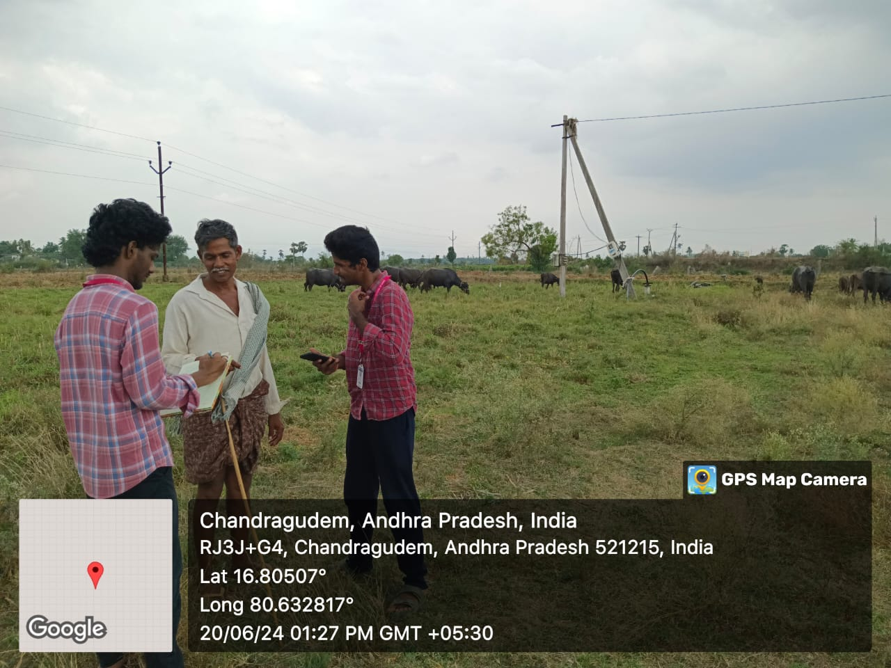

Rama Rao
-Farmer

A Indian cows, also known as desi cows, are revered for their adaptability to the local environment, resilience, and the nutritional quality of their milk. Breeds like Gir, Sahiwal, and Red Sindhi are famous for their high milk yield and disease resistance. These cows are integral to traditional farming practices in India, providing milk, dung for manure, and draught power.
Click here For more......Buffalo husbandry is an essential aspect of livestock farming, especially in regions where buffaloes are a primary source of milk, meat, and labor. This guide aims to educate farmers on best practices for buffalo care, including health management, feeding, housing, and general welfare.
Click here For more......Goats are highly versatile livestock, known for their ability to thrive in diverse climatic conditions. They are a valuable source of milk, meat, and fiber. Popular Indian goat breeds include Jamunapari, Beetal, and Barbari. Goats are relatively easy to manage, require less space, and can feed on a variety of vegetation, making them ideal for small-scale and marginal farmers. Click here For more......
Sheep farming is an important agricultural activity in India, providing wool, meat, and milk. Breeds such as Marwari, Deccani, and Nali are well-suited to different regions of the country. Sheep are hardy animals that can graze on low-quality forage, making them suitable for arid and semi-arid regions. Their wool is used in the textile industry, and mutton is a popular source of meat. Click here For more......
Poultry farming, particularly raising chickens, is a rapidly growing sector in India. Cocks, or roosters, are raised for meat production (broilers) and breeding purposes. Popular breeds include White Leghorn, Rhode Island Red, and Cornish Cross. Poultry farming is highly productive and efficient, providing a significant source of protein through meat and eggs, and contributing to rural and urban economies. Click here For more......

Clinic Asscociated with us to assist in providing content
Laboratory built for specific treatments
MYLAVARAM veterinary hospital
Welcome to our comprehensive livestock farming guide, designed to educate and assist farmers in raising Indian cows, buffaloes, goats, sheep, and poultry (cocks). Our platform provides essential information on common diseases, preventive measures, optimal feeding practices, and effective shed cleaning techniques for each animal. By integrating humane and sustainable farming practices, leveraging advanced agricultural technologies, and adhering to best practices in animal husbandry, farmers can improve productivity, ensure animal welfare, and contribute to a healthier, more sustainable agricultural ecosystem. Join us in promoting sustainable farming and enhancing the well-being of livestock.
Initiative towards Agro farming is Appreciable,Learning from various farmers and providing all the insights at one place is very helpfull and the beginers can learn from here
Now a days mobiles are common usage of all of us,we are also using the suggestions from youtube,Google...,Instead of seraching from various platforms this will be helpful in learning
As we are the experienced people many members come to us to learn about common issues that raise in Agro,this will be a great thing that we can contribute from our side.
Get in touch with us to Contribute with your experience and learn